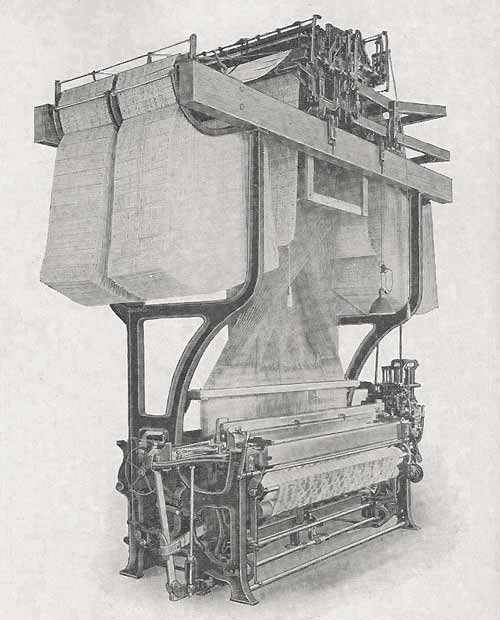
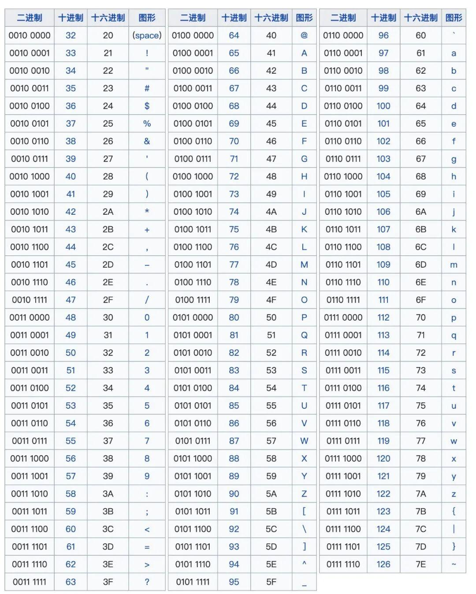
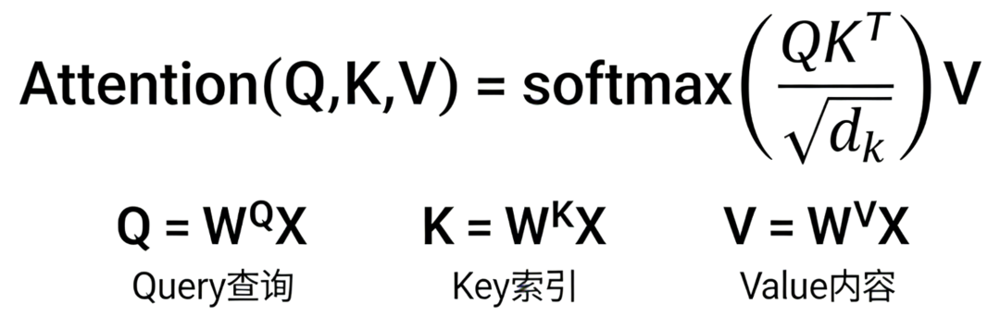

两百年前，织机上的孔洞决定了丝线的起落；今天，AI的“注意力”决定了意义的流向。这条编码的暗线，如何将物理的“有无”升维为智能的“理解”？
技术暗线史：从提花机的孔洞到Transformer的“注意力”
1801年，法国里昂的作坊里，约瑟夫·玛丽·雅卡尔展示了他的新发明：用一连串打孔卡片控制的提花织机。织工不再需要手动牵引成千上万的经线，卡片上的孔洞“指示”钩针抬起特定的线，精美的图案便自动流淌出来。这不仅仅是纺织业的革命。

近一个世纪后，一位美国统计学家赫尔曼·霍尔瑞斯凝视着堆积如山的普查数据，灵感乍现。他借鉴了提花机的思路，发明了用于人口普查的制表机——信息（一个人的年龄、性别、职业）被编码成卡片上特定位置的孔洞，机器通过感应电路是否被穿孔探针接通来“读取”并统计。
一个深刻的隐喻就此诞生：最抽象的信息，最初依赖于最物理的“有”与“无”（孔洞）来表征。 这条从雅卡尔织机到霍尔瑞斯制表机的暗线，悄然奠定了现代计算最底层的逻辑。
今天，当我们与DeepSeek、豆包、ChatGPT对话、浏览由算法推荐的资讯流时，驱动这一切的，依然是某种形式的“孔洞”编码与识别。让我们从这排孔洞出发，追溯信息如何被“编码”的百年史诗，看看它如何最终塑造了我们所处的智能时代。
技术考古：从物理映射到抽象宇宙
早期编码，是高度特化且与物理载体绑定的。提花机的孔洞只为织布， census卡片只为统计。信息的意义（语义）与其物理形式（语法）紧密耦合。转机出现在需要处理多种信息和可编程的场景。
20世纪中叶，计算机需要存储和交换文本。于是，ASCII（美国信息交换标准代码）诞生了。它做了一件划时代的事：将字符与一个7位的二进制数字（后扩展为8位）进行一一映射。字母‘A’是01000001，换行符是00001010。这标志着编码从“为特定任务设计特定符号”进入了“建立通用抽象字典”的阶段。信息第一次拥有了与物理载体（是打孔、磁化还是电压高低）相对独立的、标准的数字身份。

但为什么是二进制，而不是更“高效”的三进制、十进制？这就引向了系统思维。
系统思维：二进制的“暴政”与物理的胜利
从数学上看，用e（约2.718）进制在理论上信息密度最高。三进制也曾是苏联计算机的探索方向。但二进制最终一统江湖，并非源于数学的优美，而是物理世界的粗暴选择。
早期的电子计算机使用真空管和继电器，它们最稳定、最易区分、最可靠的两种状态就是：通电（开/1） 与断电（关/0）。晶体管这一划时代的发明，巩固了这一“暴政”。晶体管本质上是一个开关，在“饱和导通”（低电阻，代表1）和“完全截止”（高电阻，代表0）时最稳定、最节能。试图用单个晶体管稳定地区分十种电压状态，在噪音、功耗和制造成本上都是灾难。
因此，二进制统治世界，是物理定律（噪声容限、功耗、可靠性等）对数学优雅的一次胜出。它简单、鲁棒，完美匹配了硅基世界的“性情”。所有复杂的信息——文字、图片、声音乃至整个虚拟世界——都被迫通过这扇仅容“是”与“否”通过的窄门，被编码成漫山遍野的0和1。
批判与呼应：冯·诺依曼瓶颈与“注意力”的复归
在二进制的帝国里，确立了经典的冯·诺依曼架构：CPU（中央处理器）从内存中“取出”指令和数据，执行计算，再“存回”结果。这种“编码-存储-顺序处理”的模式统治了计算机科学数十年。程序（一系列指令的编码）被静态地存储在内存中，CPU像一个专注但刻板的办事员，严格按照地址顺序或跳转指令处理数据。
然而，当处理语言、图像这类非结构化、蕴含复杂关联的信息时，这种模式的局限性暴露无遗。它缺乏一种动态的、内容寻址的能力。换句话说，传统程序处理数据，好比凭档案号调取卷宗；而人类理解一句话，比如“国王吃了苹果”，会瞬间将“国王”、“吃”、“苹果”这三个概念从知识网络中动态关联起来，调用关于王权、进食、水果等一系列相关属性。
这正是注意力机制的革命性所在。2017年《Attention Is All You Need》论文中提出的Transformer模型，其核心“自注意力”公式或许令人望而生畏：

但其直觉惊人地朴素：它让序列中的每一个元素（比如一个词），都能“看向”序列中的所有其他元素，并根据相关性（通过计算Query和Key的匹配度）动态地为它们分配权重（Attention Weight），最后将这些加权后的值（Value）汇总起来，作为该元素的新表征。
这本质上是一种动态的、基于内容的编码重构。模型在处理“苹果”这个词时，不再仅仅依赖其静态的词汇编码（比如一个固定的向量），而是根据上下文，从“水果公司”、“智能手机”又或“伊甸园的禁果”、“万有引力”等不同侧重点中，动态地“编码”出最适合当前语境的含义。
这与早期打孔卡片和顺序程序的“静态预设编码”形成了历史的呼应与决裂。 雅卡尔的卡片预先决定了哪根线该抬起；冯·诺依曼的程序预先决定了指令的顺序。而注意力机制，让编码本身拥有了情境感知和动态生成的能力。信息不再是被刻在石板（或内存）上的死碑文，而是在处理瞬间被“编织”出的活的理解。从这个意义上说，Transformer实现了一次“编码范式”的跃迁：从对信息的静态表示，转向对信息间关系的动态计算与合成。
从编码物质到编码意义
回顾这条百年暗线，我们看到一条清晰的轨迹：
物理孔洞（特定任务）-> 通用二进制码（抽象字典）-> 静态程序指令（逻辑流程）-> 动态注意力权重（语义关联）
信息的编码，从对外部物理状态的直接映射（有孔/无孔），一步步走向对内在关系和意义的深度刻画。最初的编码是为了储存与传递，而今天的注意力编码，是为了理解与创造。
我们正在从“编码世界”（将现实转化为数据）走向“编码理解”（让数据产生意义）。Transformer及其代表的“注意力”编码，或许正为我们打开一扇新门：当机器不仅能处理我们赋予的符号，还能动态地为这些符号注入基于庞杂语境的、流动的意义时，我们是否在逼近某种形式的“意义产生机制”的编码？
最终，那个始于纺织作坊的、关于“用孔洞控制复杂系统”的梦想，历经二进制硅基帝国的淬炼，是否正在演化出能够理解并编织意义本身的新织机？这或许，是留给我们这个时代最深刻的“编织”之谜。